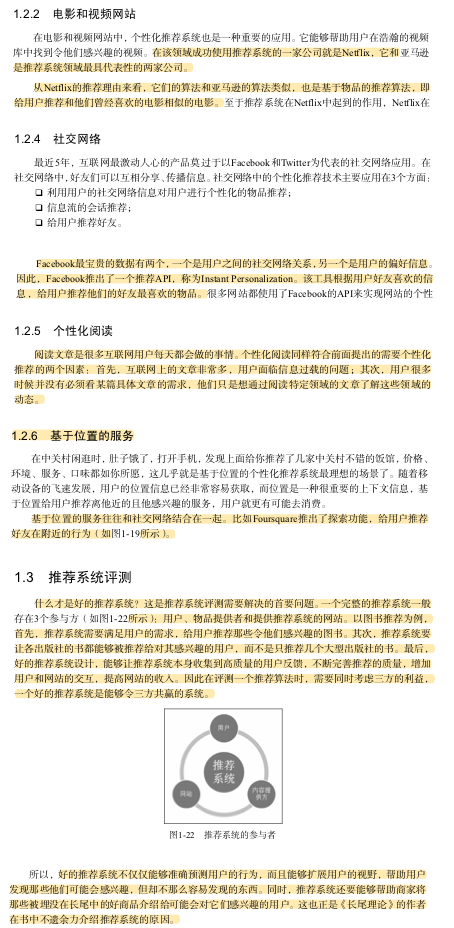
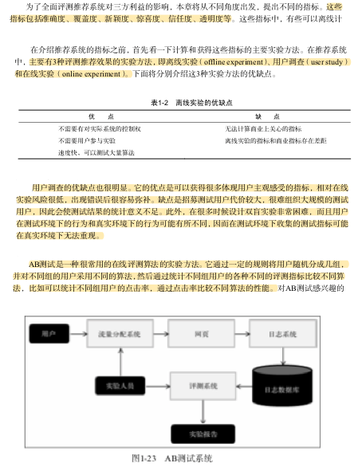
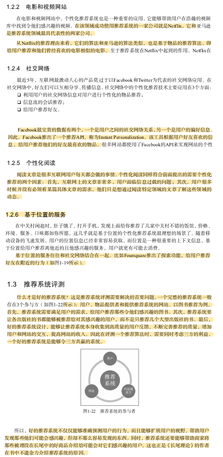
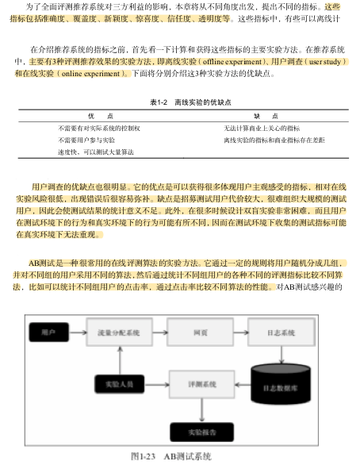
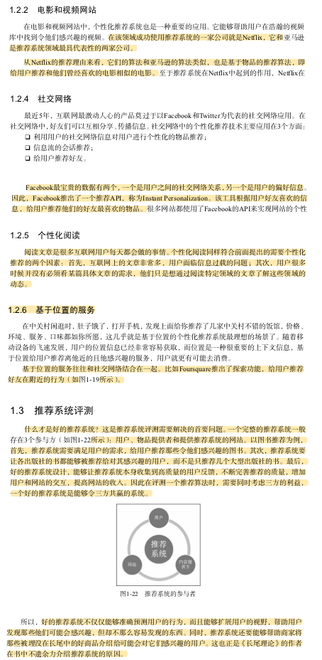
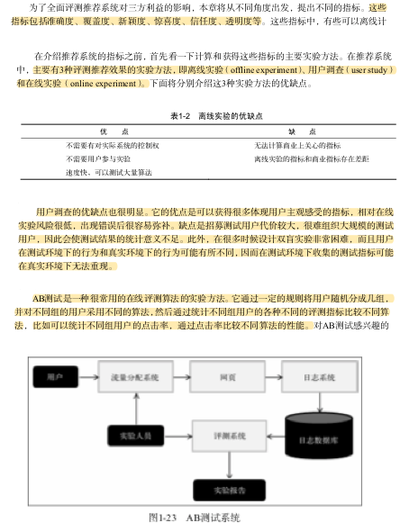

推荐系统实践-读书笔记1（好的推荐系统）
本文主要介绍了什么是推荐系统，推荐系统有哪些实际应用以及如何评测一个推荐系统。
 




本文主要介绍了什么是推荐系统，推荐系统有哪些实际应用以及如何评测一个推荐系统。


explain显示了mysql如何使用索引来处理select语句以及连接表。可以帮助选择更好的索引和写出更优化的查询语句。 使用连接（JOIN）来代替子查询(in) http://www.cnblo…
关于chatbot的产品，公司和技术介绍文章，精华摘要： 从应用的场景来看，Chatbot 可以分为开放域（Open-Domain）问题和封闭域（Closed-Domain）问题两大类。开放域问…